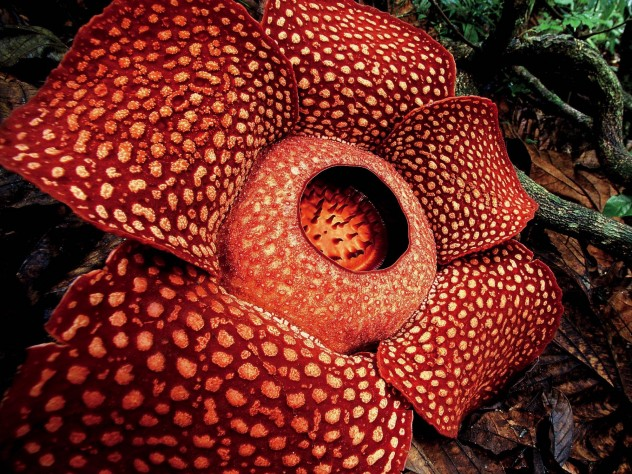
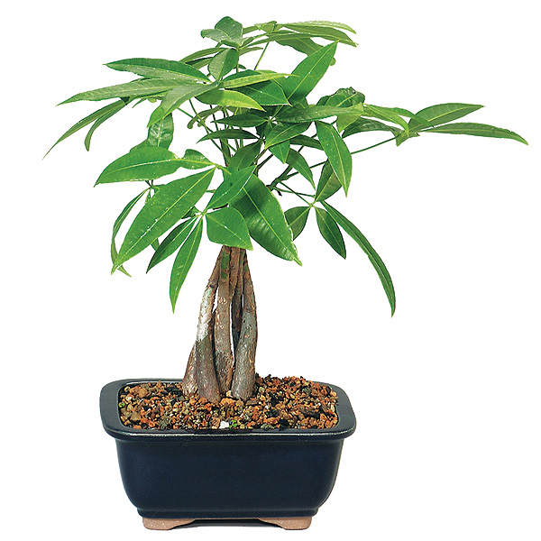
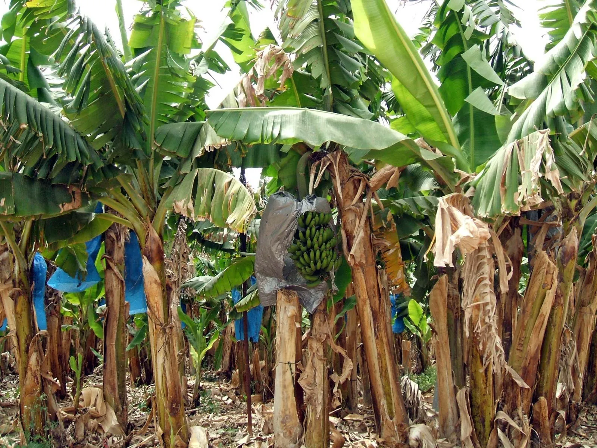

KNOWLEDGE GREEN
Plants
Plants are living creatures. They are found all around the globe, wether it is in land, harsh deserts,
underwater or, in deep caves. They get energy from the sun and produce oxygen through photosynthesis.
It is because of plants that land-breathers today are able to breathe (Fun fact: It is estimated that 80%
of the world's oxygen are produced by planktons). Furthurmore, Plants can also our food; the food that
are edible to us are called vegetables and fruits. We humans also use said food that are edible to us to
restore our energy.
My favorite plants:
Rafflesia

This plant is is called Raflesia. Rafflesia is a genus of parasitic flowering plants in the family Rafflesiaceae.
The species have enormous flowers, the buds rising from the ground or directly from the lower stems of their host
plants; one species has the largest flowers in the world. The genus contains approximately 28 species, and is found
throughout Southeast Asia. It has no stems, leaves or roots. It is a holoparasite of vines in the genus Tetrastigma
(a plant in the Vitaceae, the grape vine family) The only part of the plant that can be seen outside the host vine
is the five-petalled flower. Futhermore, In Indonesian it is known as padma raksasa ("giant padma"), in Javanese it
is called patma, in Malay, its vernacularly known as pakma, patma or ambai-ambai, whereas goliath Rafflesia arnoldii
from Sumatra is called krubut or kerubut, 'great flower'. The words padma, pakma or patma originate etymologically
from the word पद्म (padma), Sanskrit for 'lotus'
Guiana Chestnut

The Guiana chestnut or otherwise known as "Money tree" is said to bring good luck and positive energy to the owner.
That is why the money tree has become a popular gift item for many occasions where the sentiment of luck is appropriate.
Pachira aquatica is known by a large number of common names including water chestnut, Guiana chestnut and Malabar chestnut.
In addition, it is often commercially sold as a houseplant or bonsai under the name of money tree or money plant. In the wild,
this is a tropical evergreen estuarine species that is native to freshwater swamps, estuaries and river banks in tropical rainforests
from Mexico to northern South America. It is cultivated in Hawaii and southern California. It is typically grown outdoors in frost-free
climates as a tropical ornamental and/or for harvest of its edible nuts. In cooler climates, it is often grown indoors as a foliage
houseplant (rarely flowers) or bonsai, often in a braided trunk form. (Did you know? When a money tree has 7 leaves it is said to have
extra good luck)
Venus Fly Trap

Banana Plant

The banana is a gigantic herbaceous plant spread by rhizomes, and one of the most important food crops of the world.
The banana is consumed extensively throughout the tropics, where it is grown, and is also valued in the temperate zone for its flavour,
nutritional value, and constant availability. Hundreds of varieties are cultivated as a staple food source in tropical regions,
though the Cavendish dessert banana is the variety most commonly imported by nontropical countries. The ripe fruit is high in carbohydrates
(mainly sugar), potassium, and vitamins C and A, and it is low in protein and fat. Though usually eaten fresh, bananas may also be cooked,
fried or mashed and chilled in pies or puddings. They may also be used to flavour muffins, cakes, or breads.
Coconut Palm

This is the coconut palm, (Cocos nucifera), palm of the family Arecaceae, it is cultivated extensively in tropical
areas for its edible fruit, the coconut. Coconut palms are found in tropical coastal areas nearly worldwide and probably originated somewhere
in Indo-Malaya. They are the most economically important palm species, coconuts being one of the predominant crops of the tropics. The slender,
leaning, ringed trunk of the coconut palm rises to a height of up to 25 metres (80 feet) from a swollen base and is surmounted by a graceful
crown of giant featherlike leaves.Mature fruits, ovoid or ellipsoid in shape, have a thick fibrous husk surrounding the familiar single-seeded
nut of commerce. A hard shell encloses the insignificant embryo with its abundant endosperm, composed of both meat and liquid. (Did you know?
The coconut palm is also called tree of life)